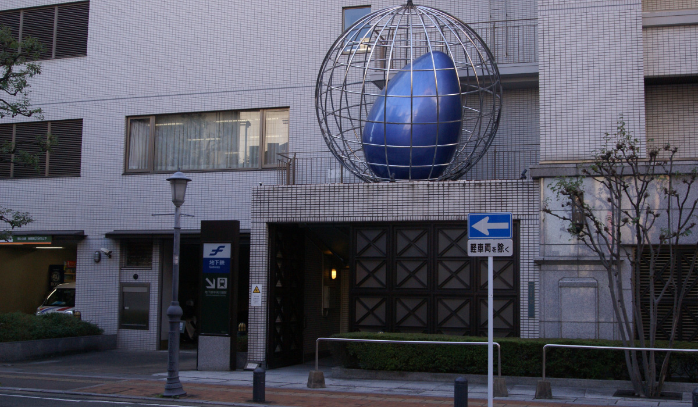
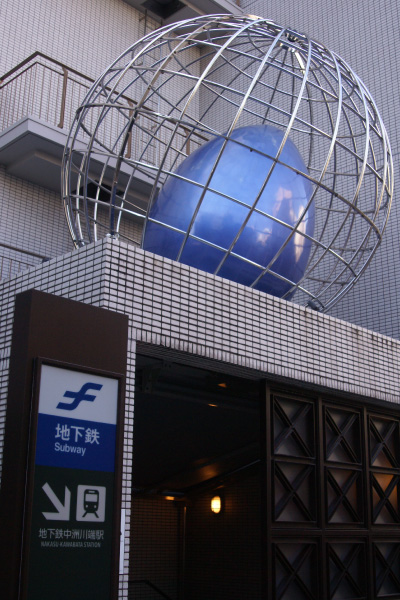
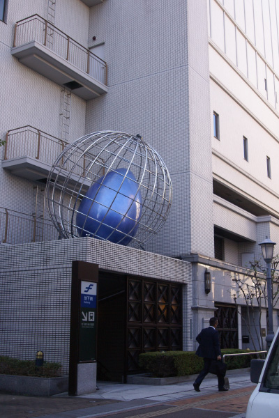
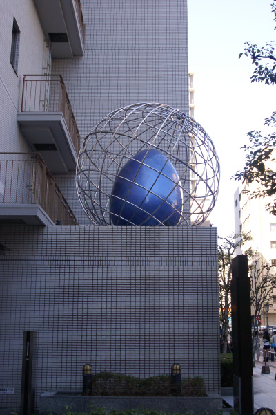
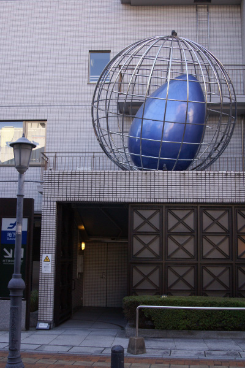
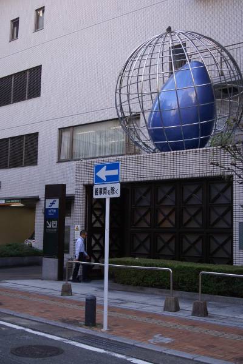

スダルシャン・シェッティ





スダルシャン・シェッティ氏はインド、マンガロールに生まれたアーティスト。「博多リバ
レイン パブリックアート・プロジェクト」の一環として博多座東通りの地下鉄中洲川端駅
の入り口に設置された。地球に見立てた金属の球体の中に卵形の彫刻が仕込まれた作品。
未来への希望を象徴する卵を地球が柔らかく包み守る姿を表現。人間の未来をポジティブ
に謳った作品であり「寿」の意味にも通じている。